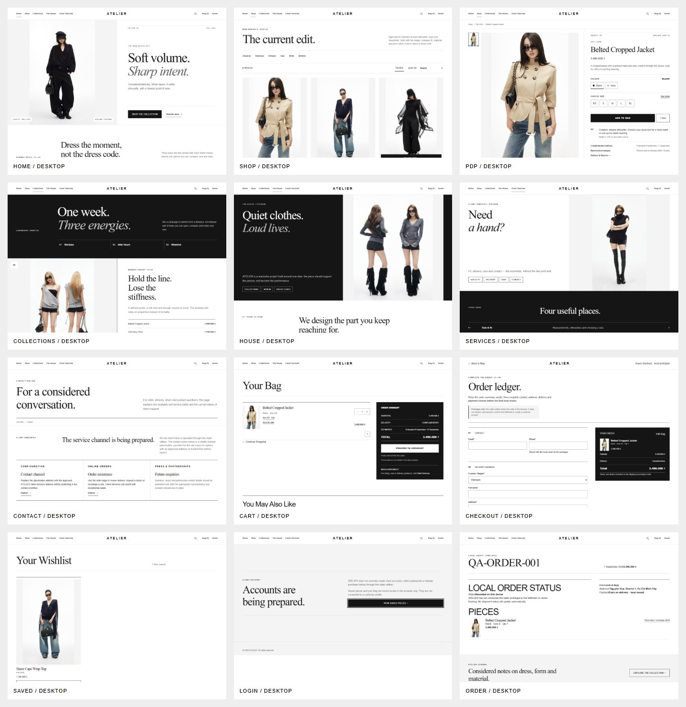
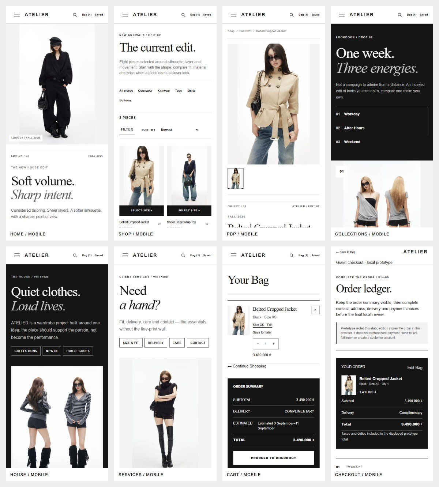

10 / Responsive & adaptive
1440 · 1280 · 768 · 390 · 320
Asymmetric editorial canvas, generous media and PDP media + narrow decision rail.
Same hierarchy with tighter spacing, type and media proportions.
Two-column discovery; editorial roles stack; PDP becomes media → decision flow.
Image → identity → price → variant → size → purchase → reassurance.
One-column recovery, readable controls and no body-level horizontal overflow.
Desktop category links condense into the existing accessible mobile menu; commerce utilities remain reachable.
Multi-column catalogue and visible refinement become touch-oriented filtering with product metadata still attached to media.
Side-by-side media/rail becomes a vertical decision sequence; product identity appears before deeply scrolling through media.
Summary and form stack without hiding progress, field labels, validation or order reality.
The repository stores monochrome contact sheets from the whole-site visual-regression lineage; V15 cloud gates extend responsive checks through 1440, 1280, 768, 390 and 320.

